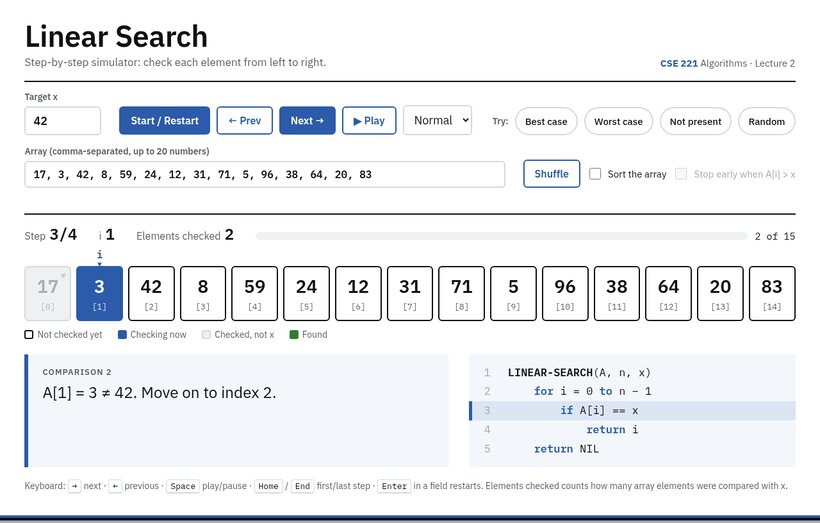
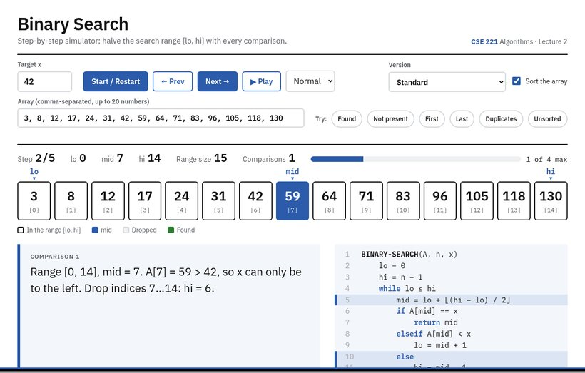
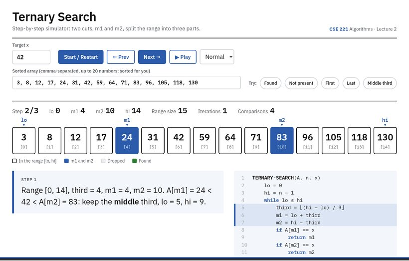

One file for each algorithm:
linear_search_simulator.htmlbinary_search_simulator.htmlternary_search_simulator.htmlDouble-click it, or drag it into Chrome, Firefox or Edge. No installation and no internet needed.
Pick a target, then use → and ←, or Space to play. Try every preset.


